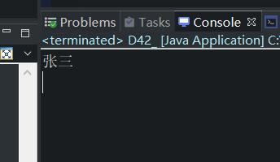
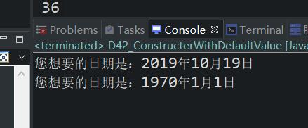

原文连接:https://www.cnblogs.com/ruigege0000/p/11701537.html
一、 this什么时候是不能省略的，我们举个例子来说明
class User2{
private int id;
public int getId() {
return id;
}
public void setId(int id) {
this.id = id;//这里如果写成了id=id，那么根据就近原则，第一个id就是形式参数，第二个id也是形式
//参数，所以这里必须要加上this才行，类似于python中的self
}
}
this用来区分局部变量和实例变量的时候，是不能省略的。
二、我们对于构造方法的再次练习，注意我们的注释，这是这个联系的重要总结。
package com.bjpowernode.java_learning;
public class D42_ {
public static void main(String[] args) {
User2 u1 = new User2(2155,"张三");
//这里说明了两个问题
//首相可以传入参数，说明这是调用了User2类中的构造方法，可以看一下函数原型是需要两个参数的
//如果不写这连个参数，那么我们需要在类User2中增加不带参数的构造方法（也就是重载函数）
//虽然id和name是private类型的，但是我们传入参数可以看出来，照样可以修改，但是我们后面再修改的时候
//就必须得调用那两个实例函数了
System.out.println(u1.getName());
}
}
class User2{
private int id;
private String name;
public int getId() {
return id;
}
public void setId(int id) {
this.id = id;//这里如果写成了id=id，那么根据就近原则，第一个id就是形式参数，第二个id也是形式
//参数，所以这里必须要加上this才行，类似于python中的self
}
public String getName() {
return name;
}
public void setName(String name) {
this.name = name;
}
public User2(int id,String name) {
this.id = id;
this.name = name;
}
}

三、我们需要创建一个Date类用来存储我们的日期，同时这里面有一个需求：如果创建对象的时候不提供年月日的话，我们需要给这个对象一个默认值1970-01-01
package com.bjpowernode.java_learning;
public class D42_ConstructerWithDefaultValue {
public static void main(String[] args) {
Date2 d1 = new Date2(2019,10,19);
Date2 d2 = new Date2();
d1.outputDate();
d2.outputDate();
}
}
class Date2{
int year;
int month;
int day;
/**
* @param year
* @param month
* @param day
*/
public Date2(int year, int month, int day) {
this.year = year;
this.month = month;
this.day = day;
}
/**
* 需求：如果创建对象的时候不提供年月日的话，我们需要给这个对象一个默认值1970-01-01
*/
public Date2(){
this(1970,1,1);
}
public void outputDate() {
System.out.println("您想要的日期是：" + year + "年" + month + "月" + day + "日");
}
}
我们看一下这里面的两个构造函数，一个是可以传入参数的，一个是不传入参数，我们不传入参数的有个固定的格式：this(默认参数)，并且这个语句必须出现在这个构造方法的第一行，有什么其他的语句，在后面写
对此可以我们解释为啥可以多这个语法，我们可以这样写
public Date2(){
year = 1970;
month = 1;
day = 1;
}
这样写运行是没有问题的，可以这样写，但是这样写代码是冗余的，因此不合适
我们还可以这样写
public Date2(){
new Date2(1970,1,1);
}
这样等于我们又创建了一个对象，这样也是不好的，因此也不用这个方法
四、我们总结一下：
this可以使用在哪里：
（1）可以使用在实例方法之中，代表当前对象【语法格式：this.】
（2）可以使用在构造方法之中，通过当前的构造方法调用其他的构造方法【语法格式：this(实参)；】
（3）this()这种语法只能出现在构造方法的第一行
三、源码：
D42_theSitustionOfNotOmitTihsKeyword.java
D42_ConstructerWithDefaultValue
地址：
https://github.com/ruigege66/Java/blob/masterD42_theSitustionOfNotOmitTihsKeyword.java
https://github.com/ruigege66/Java/blob/master/D42_ConstructerWithDefaultValue
2.CSDN：https://blog.csdn.net/weixin_44630050（心悦君兮君不知-睿）
3.博客园：https://www.cnblogs.com/ruigege0000/
4.欢迎关注微信公众号：傅里叶变换，个人公众号，仅用于学习交流，后台回复”礼包“，获取大数据学习资料